Portrait & street photographer based in Thailand. Working with natural light, soft tones, and the small moments that tell a bigger story.
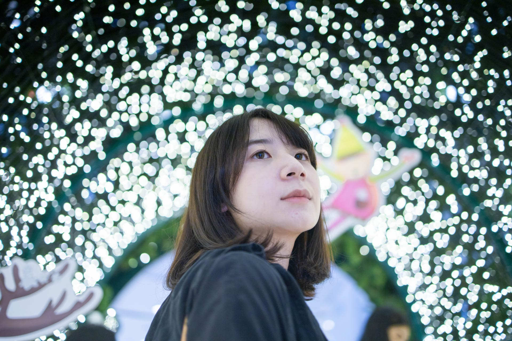
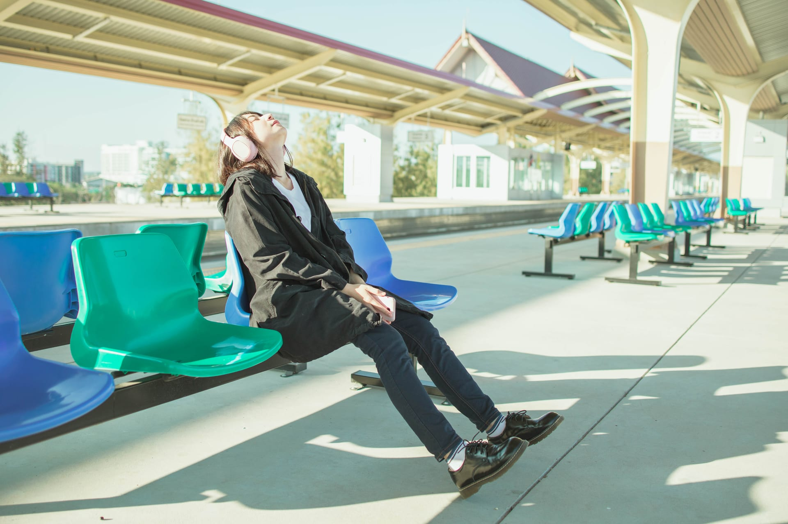
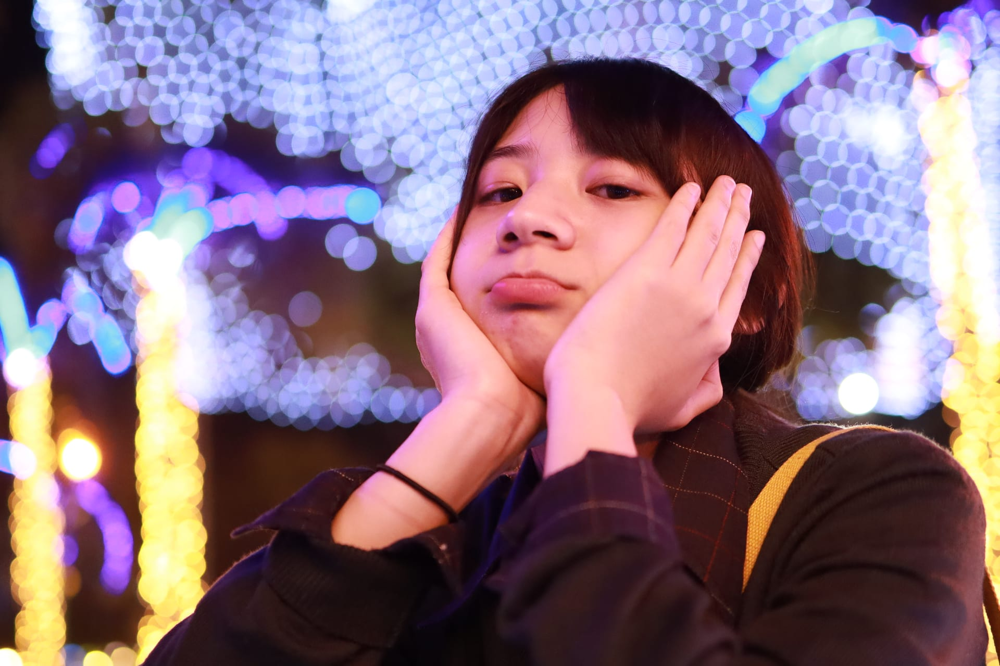
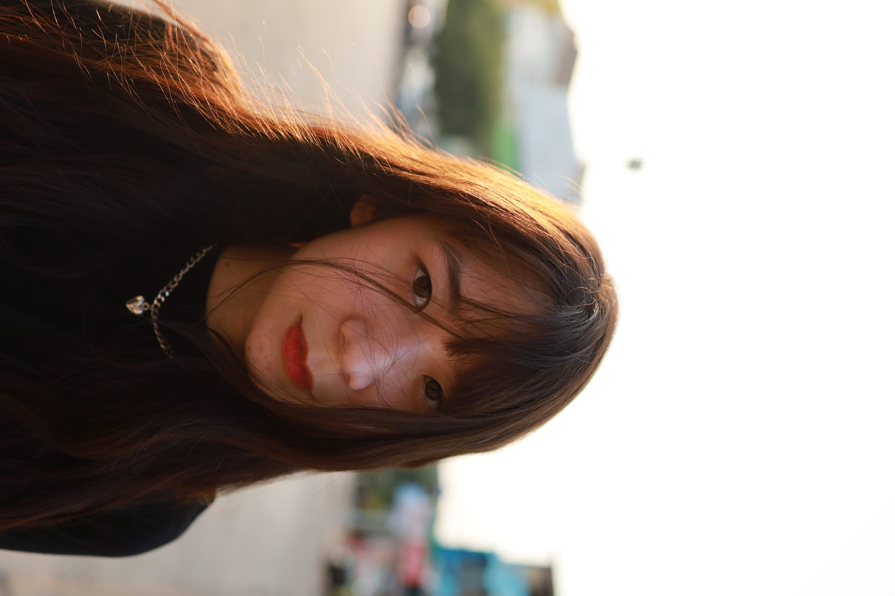
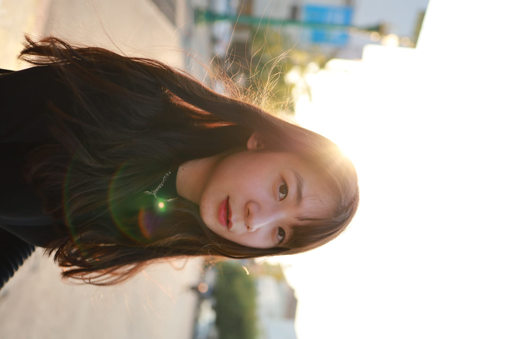
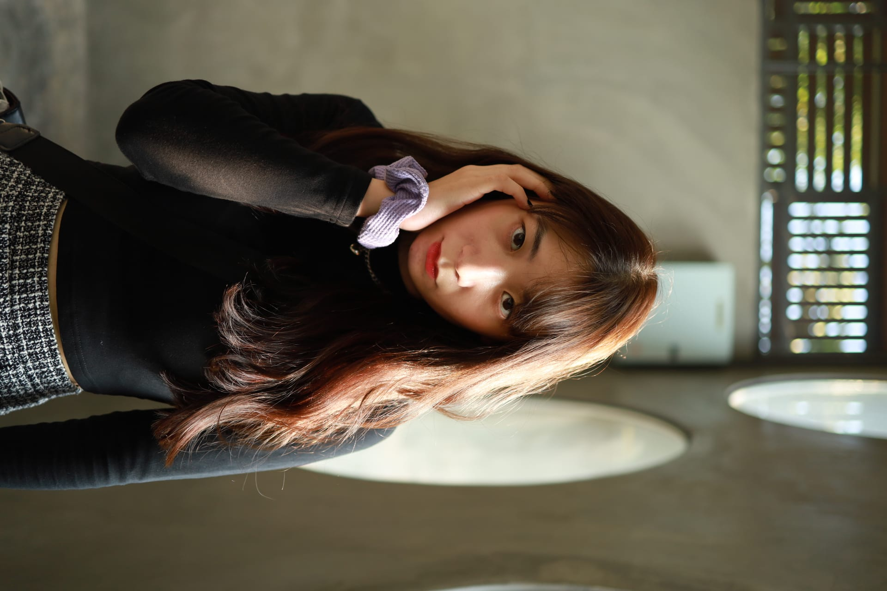
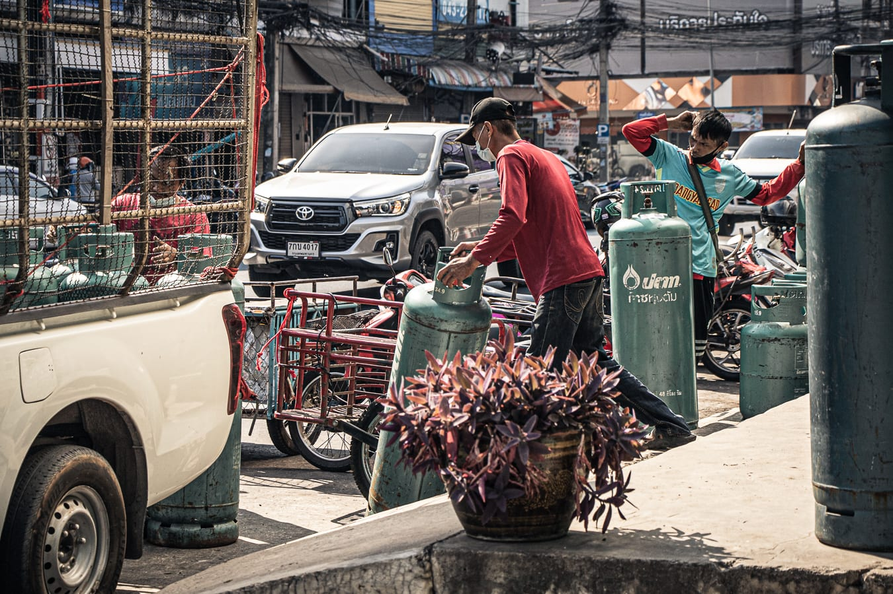
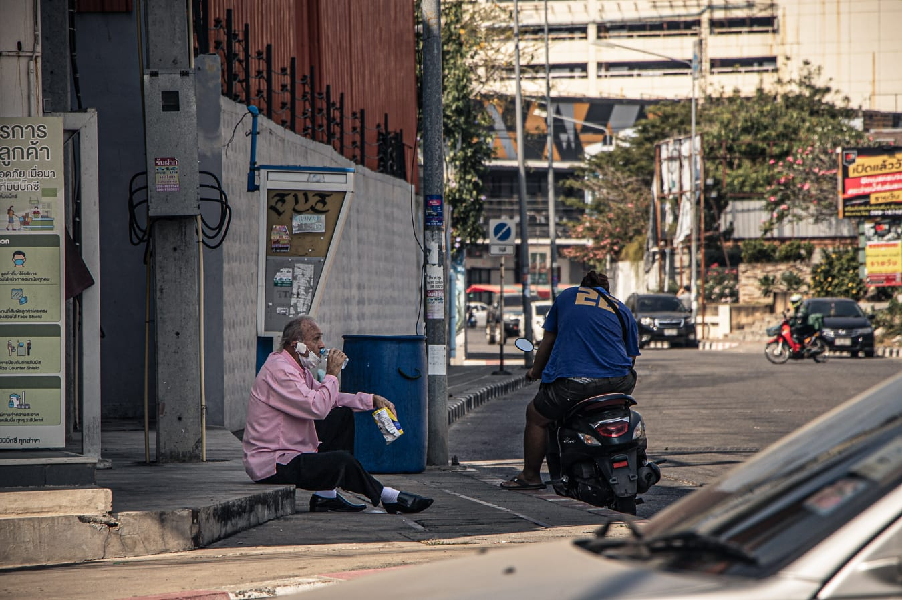
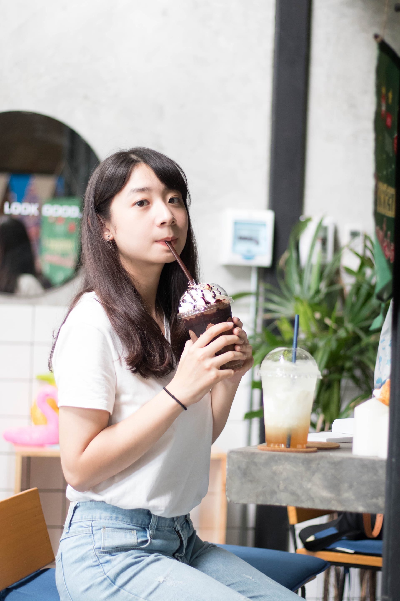
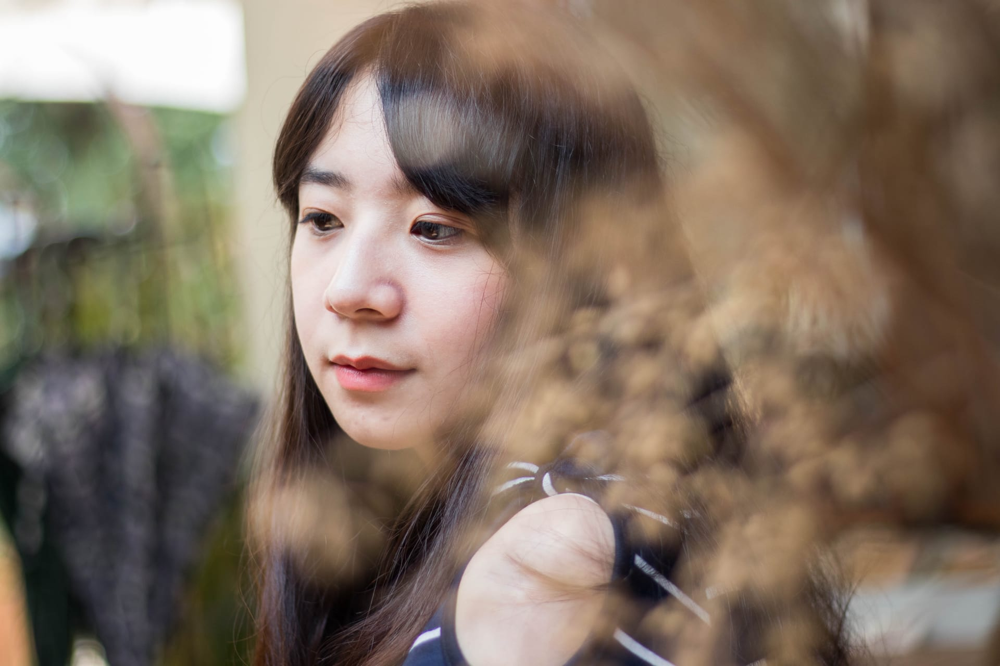
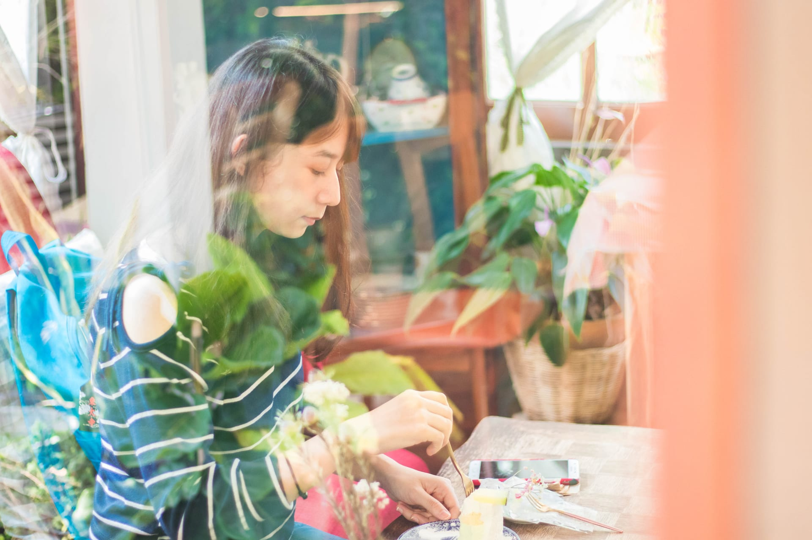
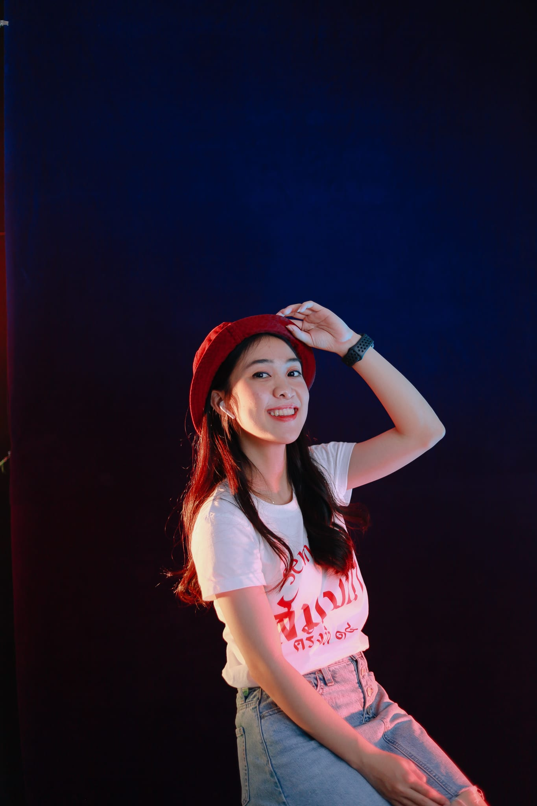
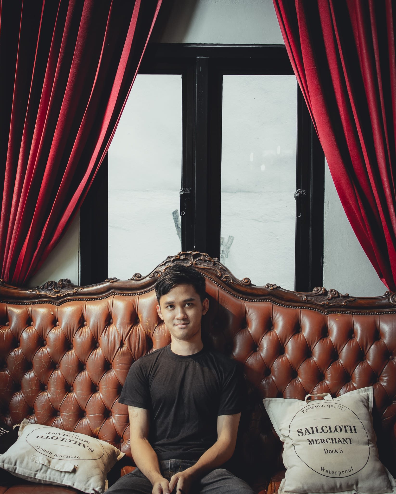
ผมเป็นช่างภาพอิสระจากประเทศไทย ที่หลงรักแสงธรรมชาติ บรรยากาศที่อ่อนโยน และโมเมนต์เงียบๆ ที่บอกเล่าเรื่องราวได้มากกว่าคำพูด
Most of my work lives somewhere between portrait and documentary — train platforms, cafés, graduation lanes, golden-hour streets. I shoot mostly with available light, and I edit gently. The goal is always to keep the warmth of the moment intact.